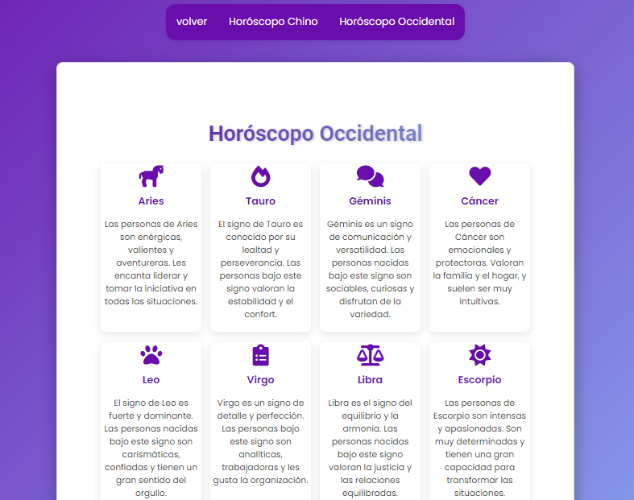
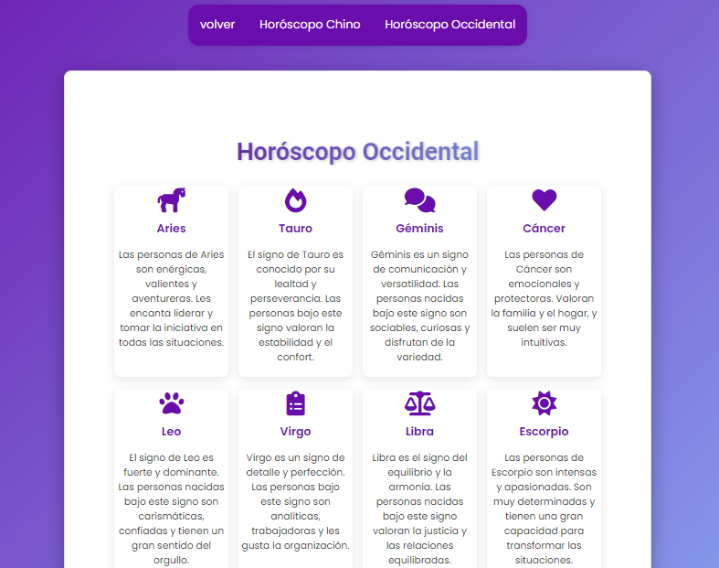
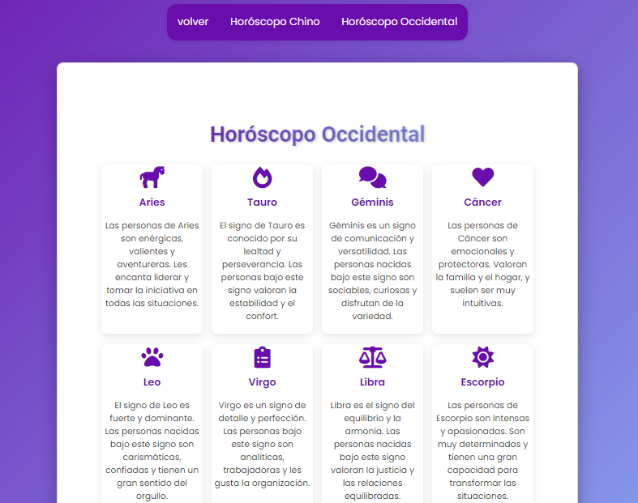

Simulador de Compatibilidad Astrológica
Este proyecto es un simulador interactivo que calcula la compatibilidad entre dos personas basándose en sus signos del horóscopo occidental y chino. Utilizando JavaScript para manejar la lógica astrológica, el simulador ofrece una experiencia personalizada y detallada para los usuarios interesados en la astrología.
Características Principales:
- Interactividad: Los usuarios pueden ingresar sus fechas de nacimiento, y el simulador calculará automáticamente sus signos zodiacales occidentales y chinos.
- Compatibilidad Detallada: El simulador no solo muestra la compatibilidad general, sino que también proporciona descripciones personalizadas, consejos para relaciones amorosas, de amistad o de trabajo, y un análisis profundo de las personalidades de ambos signos.
- Diseño Atractivo: El sitio cuenta con un diseño responsivo y animaciones suaves que mejoran la experiencia del usuario. Se han integrado íconos astrológicos en las tarjetas de signos para facilitar la identificación y aumentar la interactividad.
Tecnologías Utilizadas:
- HTML5 y CSS3: Para la estructura y el diseño visual del sitio, asegurando una experiencia de usuario fluida en todos los dispositivos.
- JavaScript: Para la lógica de compatibilidad y la interactividad del simulador.
- Font Awesome: Utilizado para incluir íconos representativos de los signos zodiacales en las tarjetas.
 

- HTML5 y CSS3: Para la estructura y el diseño visual del sitio, asegurando una experiencia de usuario fluida en todos los dispositivos.
- JavaScript: Para la lógica de compatibilidad y la interactividad del simulador.
- Font Awesome: Utilizado para incluir íconos representativos de los signos zodiacales en las tarjetas.
